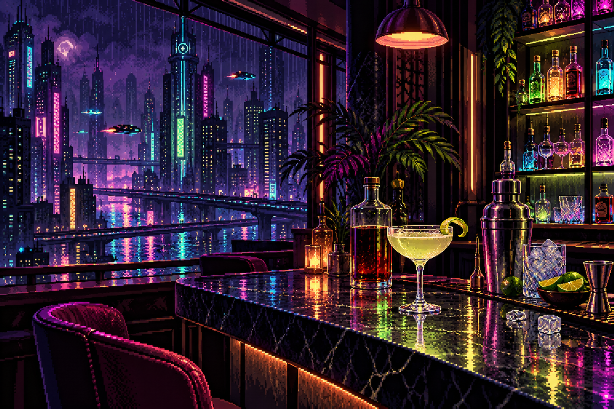

YOUR AFTER-HOURS COCKTAIL LAB
Good nights
start with
a little curiosity.
Find a new favourite. Get to know your ingredients.
Make something worth staying in for.
REAL RECIPES. ROOM TO EXPERIMENT.

01 / EXPLORE THE MENU
What’s your starting spirit?
Pick a bottle. Follow your curiosity.
Tonight’s house picks
02 / A LITTLE BAR KNOW-HOW
Every good mix
starts somewhere.
No bar cart expertise required.
Just a recipe and a little attention.
01 Read the whole recipe first
Check the ingredients, amounts and method before you start. Set out your glass and tools so everything is within reach.
02 Match ingredients with measures
Each ingredient has its own amount. Use the checklist in a recipe to keep track. If an amount is missing, DashLab shows “Not specified” rather than guessing.
03 Make room for your next favourite
Tap the heart to keep a recipe on this browser. Your saved collection stays here when you return. Start with a familiar drink, then explore a new base spirit.
THE BEST DISCOVERY IS THE NEXT ONE.